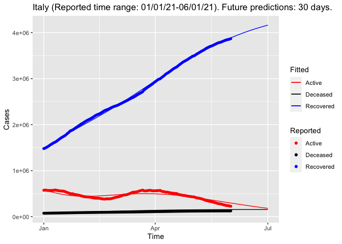
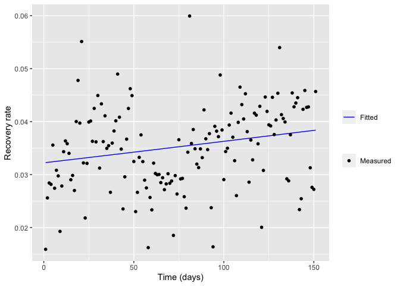
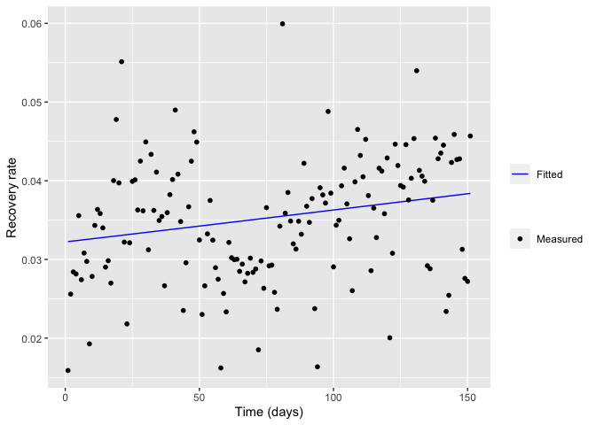

Implementation of genSEIR Package
First, call the genSEIR package:
library(genSEIR)Define the country and its population:
country = "Italy"
Npop = 60000000 Enter desired start and finish dates in mm/dd/yy format. Start date cannot be earlier than 01/22/21 and finish date cannot be later than the current date - 1. If start=NULL then start date is set to 01/22/21 and If finish=NULL then finish date is set to Sys.Date()-1:
start = "01/01/21"
finish = "06/01/21"Define dt argument which oversamples time to ensure that the algorithm converges (i.e. 1/24), and specify f argument for the future predictions (i.e. 30 days):
dt=1
f=30Get COVID-19 data from John-Hopkins University (https://github.com/CSSEGISandData/COVID-19):
data = getDataCOVID(start = start, finish = finish, country = country)Data for recovered cases:
Recovered = data$tableRecovered
Recovered## ProvinceState CountryRegion Lat Long 1/1/21 1/2/21 1/3/21
## 139 Italy 41.87194 12.56738 1479988 1489154 1503900
## 1/4/21 1/5/21 1/6/21 1/7/21 1/8/21 1/9/21 1/10/21 1/11/21 1/12/21
## 139 1520106 1536129 1556356 1572015 1589590 1606630 1617804 1633839 1653404
## 1/13/21 1/14/21 1/15/21 1/16/21 1/17/21 1/18/21 1/19/21 1/20/21 1/21/21
## 139 1673936 1694051 1713030 1729216 1745726 1760489 1781917 1806932 1827451
## 1/22/21 1/23/21 1/24/21 1/25/21 1/26/21 1/27/21 1/28/21 1/29/21 1/30/21
## 139 1855127 1871189 1882074 1897861 1917117 1936289 1953509 1973388 1990152
## 1/31/21 2/1/21 2/2/21 2/3/21 2/4/21 2/5/21 2/6/21 2/7/21 2/8/21
## 139 2010548 2024523 2043499 2059248 2076928 2091923 2107061 2118441 2133523
## 2/9/21 2/10/21 2/11/21 2/12/21 2/13/21 2/14/21 2/15/21 2/16/21 2/17/21
## 139 2149350 2165817 2185655 2202077 2216050 2225519 2237290 2251734 2268253
## 2/18/21 2/19/21 2/20/21 2/21/21 2/22/21 2/23/21 2/24/21 2/25/21 2/26/21
## 139 2286024 2303199 2315687 2324633 2334968 2347866 2362465 2375318 2387032
## 2/27/21 2/28/21 3/1/21 3/2/21 3/3/21 3/4/21 3/5/21 3/6/21 3/7/21
## 139 2398352 2405199 2416093 2426150 2440218 2453706 2467388 2481372 2494839
## 3/8/21 3/9/21 3/10/21 3/11/21 3/12/21 3/13/21 3/14/21 3/15/21 3/16/21
## 139 2508732 2521731 2535483 2550483 2564926 2579896 2589731 2605538 2619654
## 3/17/21 3/18/21 3/19/21 3/20/21 3/21/21 3/22/21 3/23/21 3/24/21 3/25/21
## 139 2639370 2655346 2671638 2686236 2699762 2719477 2753083 2773215 2794888
## 3/26/21 3/27/21 3/28/21 3/29/21 3/30/21 3/31/21 4/1/21 4/2/21 4/3/21
## 139 2814652 2832939 2850889 2870614 2889301 2913045 2933757 2953377 2974688
## 4/4/21 4/5/21 4/6/21 4/7/21 4/8/21 4/9/21 4/10/21 4/11/21 4/12/21
## 139 2988199 2997522 3019255 3040182 3060411 3086586 3107069 3122555 3140565
## 4/13/21 4/14/21 4/15/21 4/16/21 4/17/21 4/18/21 4/19/21 4/20/21 4/21/21
## 139 3158725 3178976 3200196 3218975 3235459 3248593 3268262 3290715 3311267
## 4/22/21 4/23/21 4/24/21 4/25/21 4/26/21 4/27/21 4/28/21 4/29/21 4/30/21
## 139 3330392 3351461 3369048 3382224 3398763 3413451 3431867 3449955 3465576
## 5/1/21 5/2/21 5/3/21 5/4/21 5/5/21 5/6/21 5/7/21 5/8/21 5/9/21
## 139 3484042 3492679 3505717 3524194 3541266 3557133 3572713 3590107 3604523
## 5/10/21 5/11/21 5/12/21 5/13/21 5/14/21 5/15/21 5/16/21 5/17/21 5/18/21
## 139 3619586 3636089 3655112 3669407 3683189 3696481 3706084 3715389 3727220
## 5/19/21 5/20/21 5/21/21 5/22/21 5/23/21 5/24/21 5/25/21 5/26/21 5/27/21
## 139 3741149 3753965 3766660 3779293 3785866 3792898 3804246 3816176 3826984
## 5/28/21 5/29/21 5/30/21 5/31/21 6/1/21
## 139 3837518 3845087 3851661 3858019 3868332Data for death cases:
Deaths = data$tableDeaths
Deaths## ProvinceState CountryRegion Lat Long 1/1/21 1/2/21 1/3/21 1/4/21
## 154 Italy 41.87194 12.56738 74621 74985 75332 75680
## 1/5/21 1/6/21 1/7/21 1/8/21 1/9/21 1/10/21 1/11/21 1/12/21 1/13/21 1/14/21
## 154 76329 76877 77291 77911 78394 78755 79203 79819 80326 80848
## 1/15/21 1/16/21 1/17/21 1/18/21 1/19/21 1/20/21 1/21/21 1/22/21 1/23/21
## 154 81325 81800 82177 82554 83157 83681 84202 84674 85162
## 1/24/21 1/25/21 1/26/21 1/27/21 1/28/21 1/29/21 1/30/21 1/31/21 2/1/21
## 154 85461 85881 86422 86889 87381 87858 88279 88516 88845
## 2/2/21 2/3/21 2/4/21 2/5/21 2/6/21 2/7/21 2/8/21 2/9/21 2/10/21 2/11/21
## 154 89344 89820 90241 90618 91003 91273 91580 92002 92338 92729
## 2/12/21 2/13/21 2/14/21 2/15/21 2/16/21 2/17/21 2/18/21 2/19/21 2/20/21
## 154 93045 93356 93577 93835 94171 94540 94887 95235 95486
## 2/21/21 2/22/21 2/23/21 2/24/21 2/25/21 2/26/21 2/27/21 2/28/21 3/1/21
## 154 95718 95992 96348 96666 96974 97227 97507 97699 97945
## 3/2/21 3/3/21 3/4/21 3/5/21 3/6/21 3/7/21 3/8/21 3/9/21 3/10/21 3/11/21
## 154 98288 98635 98974 99271 99578 99785 100103 100479 100811 101184
## 3/12/21 3/13/21 3/14/21 3/15/21 3/16/21 3/17/21 3/18/21 3/19/21 3/20/21
## 154 101564 101881 102145 102499 103001 103432 103855 104241 104642
## 3/21/21 3/22/21 3/23/21 3/24/21 3/25/21 3/26/21 3/27/21 3/28/21 3/29/21
## 154 104942 105328 105879 106339 106799 107256 107636 107933 108350
## 3/30/21 3/31/21 4/1/21 4/2/21 4/3/21 4/4/21 4/5/21 4/6/21 4/7/21 4/8/21
## 154 108879 109346 109847 110328 110704 111030 111326 111747 112374 112861
## 4/9/21 4/10/21 4/11/21 4/12/21 4/13/21 4/14/21 4/15/21 4/16/21 4/17/21
## 154 113579 113923 114254 114612 115088 115557 115937 116366 116676
## 4/18/21 4/19/21 4/20/21 4/21/21 4/22/21 4/23/21 4/24/21 4/25/21 4/26/21
## 154 116927 117243 117633 117997 118357 118699 119021 119238 119539
## 4/27/21 4/28/21 4/29/21 4/30/21 5/1/21 5/2/21 5/3/21 5/4/21 5/5/21 5/6/21
## 154 119912 120256 120544 120807 121033 121177 121433 121738 122005 122263
## 5/7/21 5/8/21 5/9/21 5/10/21 5/11/21 5/12/21 5/13/21 5/14/21 5/15/21
## 154 122470 122694 122833 123031 123282 123544 123745 123927 124063
## 5/16/21 5/17/21 5/18/21 5/19/21 5/20/21 5/21/21 5/22/21 5/23/21 5/24/21
## 154 124156 124296 124497 124646 124810 125028 125153 125225 125335
## 5/25/21 5/26/21 5/27/21 5/28/21 5/29/21 5/30/21 5/31/21 6/1/21
## 154 125501 125622 125793 125919 126002 126046 126128 126221Data for confirmed cases:
Confirmed = data$tableConfirmed
Confirmed## ProvinceState CountryRegion Lat Long 1/1/21 1/2/21 1/3/21
## 154 Italy 41.87194 12.56738 2129376 2141201 2155446
## 1/4/21 1/5/21 1/6/21 1/7/21 1/8/21 1/9/21 1/10/21 1/11/21 1/12/21
## 154 2166244 2181619 2201945 2220361 2237890 2257866 2276491 2289021 2303263
## 1/13/21 1/14/21 1/15/21 1/16/21 1/17/21 1/18/21 1/19/21 1/20/21 1/21/21
## 154 2319036 2336279 2352423 2368733 2381277 2390102 2400598 2414166 2428221
## 1/22/21 1/23/21 1/24/21 1/25/21 1/26/21 1/27/21 1/28/21 1/29/21 1/30/21
## 154 2441854 2455185 2466813 2475372 2485956 2501147 2515507 2529070 2541783
## 1/31/21 2/1/21 2/2/21 2/3/21 2/4/21 2/5/21 2/6/21 2/7/21 2/8/21
## 154 2553032 2560957 2570608 2583790 2597446 2611659 2625098 2636738 2644707
## 2/9/21 2/10/21 2/11/21 2/12/21 2/13/21 2/14/21 2/15/21 2/16/21 2/17/21
## 154 2655319 2668266 2683403 2697296 2710819 2721879 2729223 2739591 2751657
## 2/18/21 2/19/21 2/20/21 2/21/21 2/22/21 2/23/21 2/24/21 2/25/21 2/26/21
## 154 2765412 2780882 2795796 2809246 2818863 2832162 2848564 2868435 2888923
## 2/27/21 2/28/21 3/1/21 3/2/21 3/3/21 3/4/21 3/5/21 3/6/21 3/7/21
## 154 2907825 2925265 2938371 2955434 2976274 2999119 3023129 3046762 3067486
## 3/8/21 3/9/21 3/10/21 3/11/21 3/12/21 3/13/21 3/14/21 3/15/21 3/16/21
## 154 3081368 3101093 3123368 3149017 3175807 3201838 3223142 3238394 3258770
## 3/17/21 3/18/21 3/19/21 3/20/21 3/21/21 3/22/21 3/23/21 3/24/21 3/25/21
## 154 3281810 3306711 3332418 3356331 3376376 3400877 3419616 3440862 3464543
## 3/26/21 3/27/21 3/28/21 3/29/21 3/30/21 3/31/21 4/1/21 4/2/21 4/3/21
## 154 3488619 3512453 3532057 3544957 3561012 3584899 3607083 3629000 3650247
## 4/4/21 4/5/21 4/6/21 4/7/21 4/8/21 4/9/21 4/10/21 4/11/21 4/12/21
## 154 3668264 3678944 3686707 3700393 3717602 3736526 3754077 3769814 3779594
## 4/13/21 4/14/21 4/15/21 4/16/21 4/17/21 4/18/21 4/19/21 4/20/21 4/21/21
## 154 3793033 3809193 3826156 3842079 3857443 3870131 3878994 3891063 3904899
## 4/22/21 4/23/21 4/24/21 4/25/21 4/26/21 4/27/21 4/28/21 4/29/21 4/30/21
## 154 3920945 3935703 3949517 3962674 3971114 3981512 3994894 4009208 4022653
## 5/1/21 5/2/21 5/3/21 5/4/21 5/5/21 5/6/21 5/7/21 5/8/21 5/9/21
## 154 4035617 4044762 4050708 4059821 4070400 4082198 4092747 4102921 4111210
## 5/10/21 5/11/21 5/12/21 5/13/21 5/14/21 5/15/21 5/16/21 5/17/21 5/18/21
## 154 4116287 4123230 4131078 4139160 4146722 4153374 4159122 4162576 4167025
## 5/19/21 5/20/21 5/21/21 5/22/21 5/23/21 5/24/21 5/25/21 5/26/21 5/27/21
## 154 4172525 4178261 4183476 4188190 4192183 4194672 4197892 4201827 4205970
## 5/28/21 5/29/21 5/30/21 5/31/21 6/1/21
## 154 4209707 4213055 4216003 4217821 4220304Remove first four columns since they do not include number of cases:
recovered = Recovered[,5:ncol(data$tableRecovered)]
deaths = Deaths[,5:ncol(data$tableDeaths)]
confirmed = Confirmed[,5:ncol(data$tableConfirmed)]Define initial estimates for parameters to be optimized: alpha_guess: protection rate, beta_guess: infection rate, LT_guess: latent time in days, Q_guess: rate at which infectious people enter in quarantine, lambda_guess: time dependent recovery rate, kappa_guess: time dependent death rate. These are the parameters that define the course of the outbreak and they will be optimized in the later steps:
alpha_guess = 0.2
beta_guess = 1
LT_guess = 3
Q_guess = 0.3
lambda_guess = c(0.01,0.001,10)
kappa_guess = c(0.001,0.001,10)
guess = c(alpha_guess, beta_guess, 1/LT_guess, Q_guess, lambda_guess, kappa_guess)
guess## [1] 0.2000000 1.0000000 0.3333333 0.3000000 0.0100000 0.0010000
## [7] 10.0000000 0.0010000 0.0010000 10.0000000Define initial conditions: Q0: initial number of quarantined cases, I0: initial number of infectious cases, E0: initial number of exposed cases, R0: initial number of recovered cases, D0: initial number of death cases:
Q0 = confirmed[1]-recovered[1]-deaths[1]
I0 = 0.3*Q0
E0 = 0.3*Q0
R0 = recovered[1]
D0 = deaths[1]Specify the number of active cases by subtracting the number of recovered and death cases from the number of confirmed cases:
Active = confirmed-recovered-deaths
Active[Active<0] <- 0 Define a time vector between start and finish dates:
time = seq(as.Date(start, format = "%m/%d/%y"), as.Date(finish, format = "%m/%d/%y"), by = "1 day")Optimize the outbreak parameters. The following function attempts to solve the nonlinear sum of squares problem by using Nash variant of Marquardt’s approach to stabilizing the Gauss-Newton method using the Levenberg-Marquardt adjustment. This is explained in (Nash (1990) Compact numerical methods for computers: linear algebra and function minimisation. CRC press.):
Q=Active
R=recovered
D = deaths
params = fit_SEIQRDP(Q, R, D, Npop = Npop, E0 = E0, I0 = I0,
time = time, dt = dt, guess = guess, ftol = 1e-6,
ptol = 1e-6, gtol = 1e-6, epsfcn = 0.001, factor = 100, maxfev = 1000,
maxiter = 100, nprint = 1, trace = FALSE)Optimized parameters:
params## $alpha1
## [1] 0.01767278
##
## $beta1
## [1] 0.250021
##
## $gamma1
## [1] 0.02785607
##
## $delta1
## [1] 0.0848147
##
## $Lambda1
## [1] 8.084558e-02 2.057347e-03 2.000000e+02
##
## $Kappa1
## [1] 0.001712024 0.010674346 20.000012829
##
## $lambdaFun
## function (a, t)
## {
## a[1]/(1 + exp(-a[2] * (t - a[3])))
## }
## <bytecode: 0x7fbaf87f4278>
## <environment: 0x7fbaf87f0068>
##
## $kappaFun
## function (a, t)
## {
## a[1] * exp(-(a[2] * (t - a[3]))^2)
## }
## <bytecode: 0x7fbaf42d9890>
## <environment: 0x7fbaf42d5200>Obtain predicted cases including susceptible, exposed, infectious, quarantined, recovered, dead and insusceptible using a generalized SEIR model:
result = SEIQRDP(alpha = params$alpha1, beta = params$beta1,
gamma = params$gamma1, delta = params$delta1,
lambda0 = params$Lambda1, kappa0 = params$Kappa1,
Npop, E0, I0, Q0, R0, D0, lambdaFun = params$lambdaFun,
kappaFun = params$kappaFun, tstart = start, tfinish = finish,
dt = dt, f = f)Predictions for susceptible cases:
head(result$susceptible)## [1] 57525764 56477084 55449604 54442486 53454983 52486422Predictions for exposed cases:
head(result$exposed)## [1] 172430.1 208456.1 240677.6 269662.4 295888.7 319759.4Predictions for infectious cases:
head(result$infectious)## [1] 172430.1 163503.8 156213.8 150333.1 145667.2 142049.1Predictions for quarantined cases:
head(result$quarantined)## [1] 574767.0 569625.8 563955.4 557900.8 551584.7 545110.8Predictions for recovered cases:
head(result$recovered)## [1] 1479988 1498427 1516714 1534833 1552775 1570531Predictions for dead cases:
head(result$dead)## [1] 74621.00 75557.05 76488.36 77413.92 78332.91 79244.72Predictions for insusceptible cases:
head(result$insusceptible)## [1] 0 1007346 1996347 2967370 3920768 4856883Create plot for reported and predicted active, recovered and death cases. This function also plots the fitted and calculated death and recovered ratios to check whether the approximation of these ratios is appropriate:
title = title = paste0(country, " (Reported time range: ", start, "-", finish, "). Future predictions: ",f, " days.")
plotSEIQRDP(result, Active, recovered, deaths, title, params, checkRates = TRUE) 
